Macadam
Origine du projet
Voici un projet que j'ai fait un première année de licence d'informatique.
Le but était de faire un jeu de société jouable dans un terminal en python.
Pour éviter la copie de code, les enseignants ont inventés de nouveaux jeux de plateau dérivés de jeux connus.
Scénarios de déplacements
Les déplacements dans son camp
Dans tous les scénarios ci-dessous, on considérera la zone verte comme celle des noirs, la zone bleue comme celle
des blancs et les zones jaunes à l'intérieur de ces zones comme des cages.
On considérera aussi tous les points rouges comme étant les zones possibles dans lesquelles peut se déplacer le pion
initialement considéré.
Les déplacements dans son camp ne peuvent se faire que de façon orthogonale
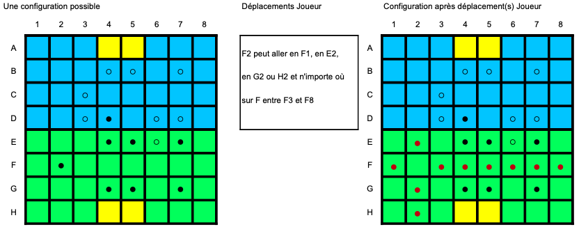
Les déplacements orthogonaux dans son camp sont bloqués en cas d'obstacle
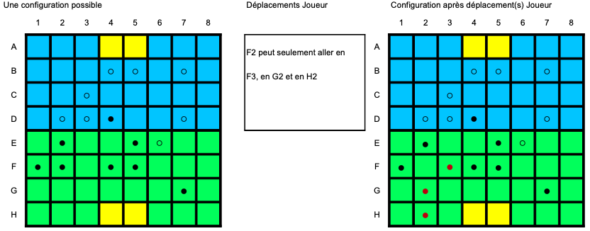
Le déplacement interdit dans les cages de son camp
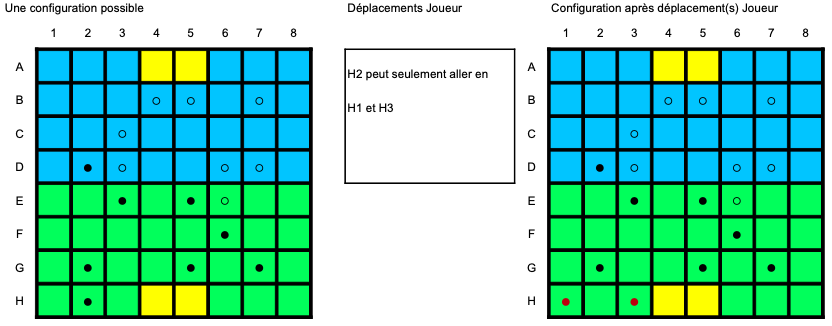
Un pion peut se déplacer en sautant un pion allié orthogonalement et diagonalement
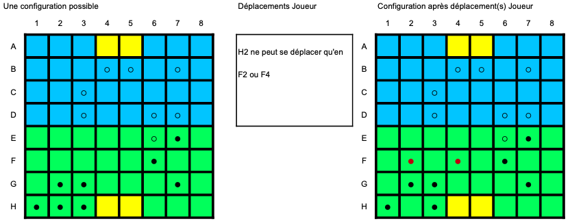
Un pion peut enchaîner les sauts sur les pions alliés, mais ne peut plus se déplacer ensuite
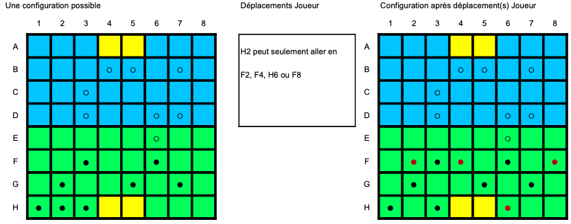
Les déplacements dans la zone adverse
Dans la zone adverse, un pion ne peut se déplacer que par sauts de pions alliés

Un pion ne peut pas se déplacer en sautant un pion adverse
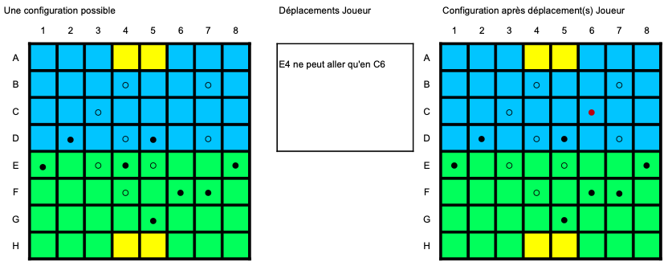
Un pion ne peut se déplacer sans saut dans le camp adverse
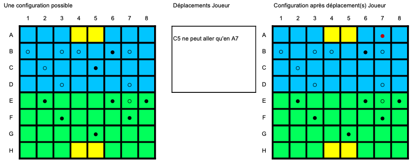
Scénario d'une fin de partie
Tour des NOIRS
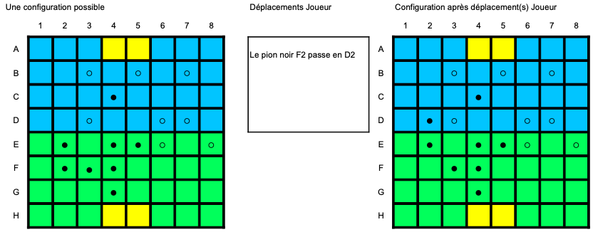
Tour des BLANCS
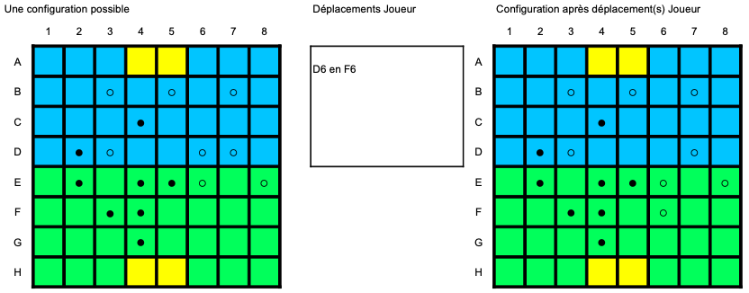
Tour des NOIRS
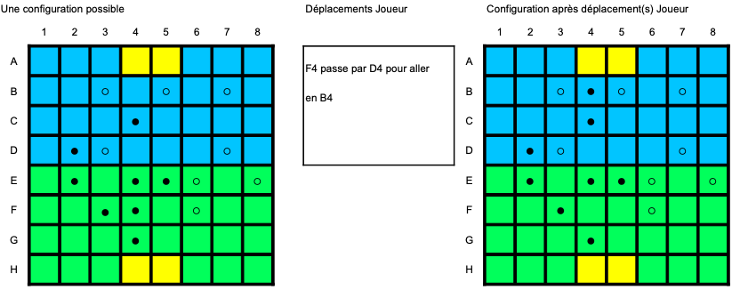
Tour des BLANCS
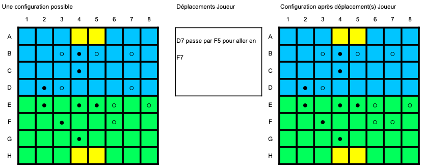
Tour des NOIRS
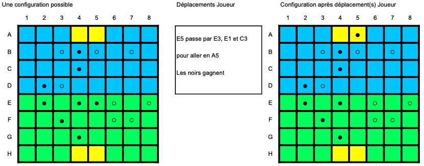
Appuyez sur Run pour lancer le jeu dans la console